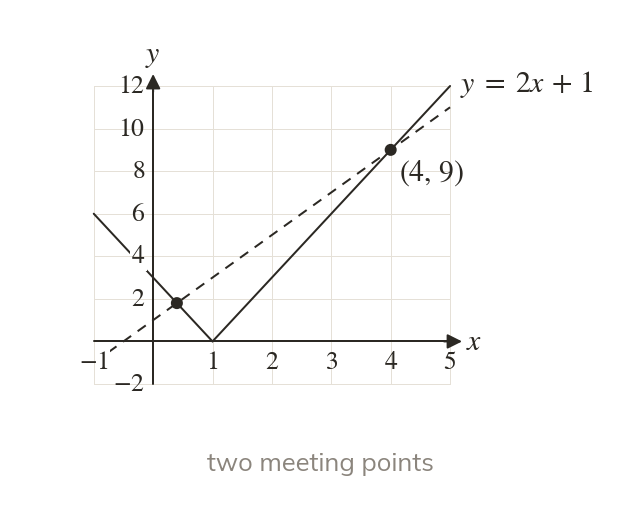
Sketch first
Sketch and to see how many times they meet. Here they meet twice, once on each arm of the V.
This lesson brings the chapter's modulus work together. Sketch first to see how many solutions to expect, then solve each case and reject any that fail. It closes Pure Year chapter and the same sketch-then-solve habit is used for every inequality from here on.
Work down the page at your own pace. Write every answer in your book first, then click to check it.
Read each card, then follow the worked examples one step at a time.

Sketch and to see how many times they meet. Here they meet twice, once on each arm of the V.
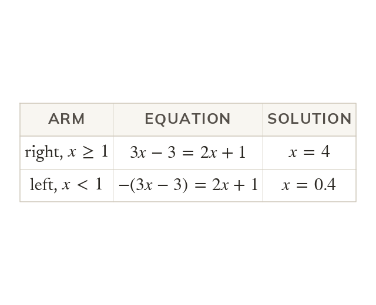
On the right arm, gives
On the left arm, gives
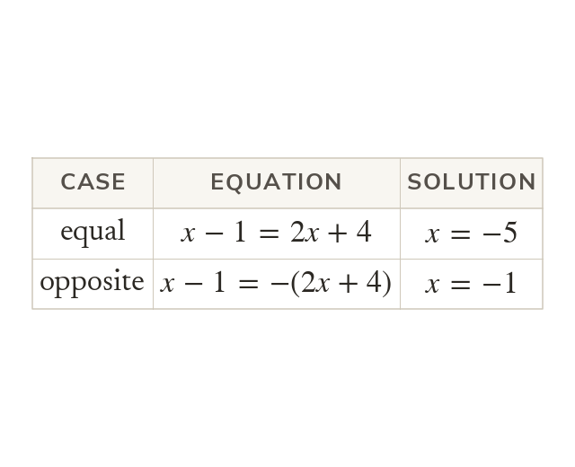
means the insides are equal or opposite, so or
Pick an answer. If it's wrong, the feedback tells you which mistake it was.
Write the blanks in your book first, then tap each one to check.
Read each card, then follow the worked examples one step at a time.
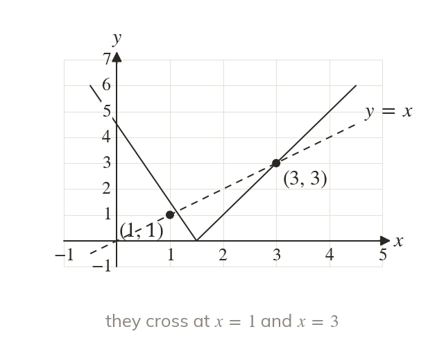
To solve first find where meets gives and gives
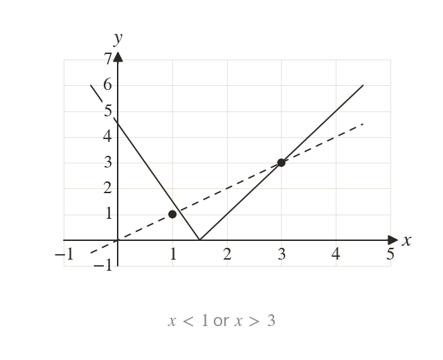
The V shape is above the line to the left of and to the right of
So for or
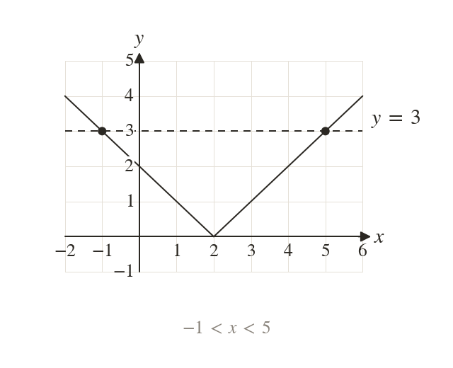
means so
The V shape is below between the crossing points.
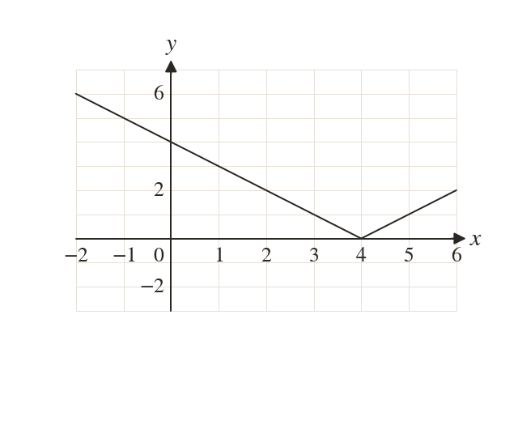
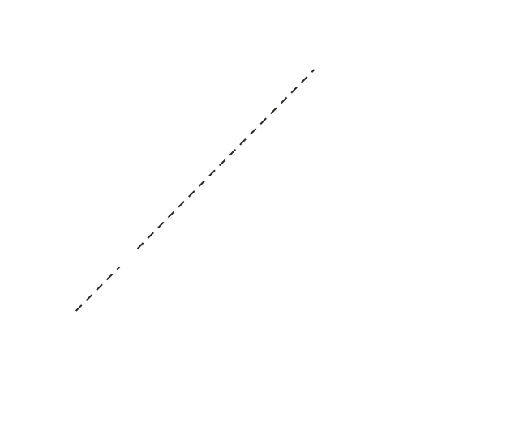
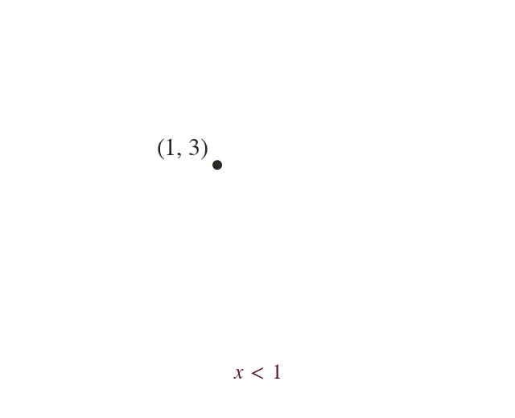
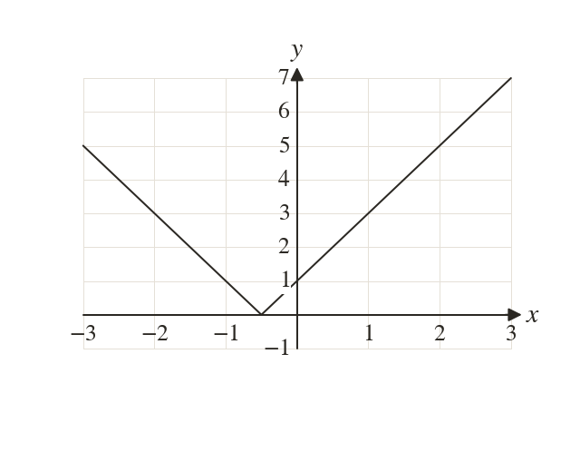
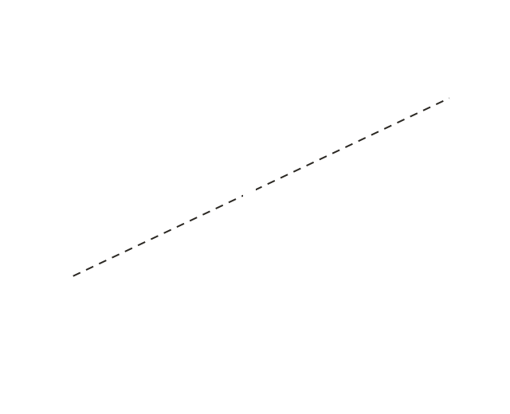
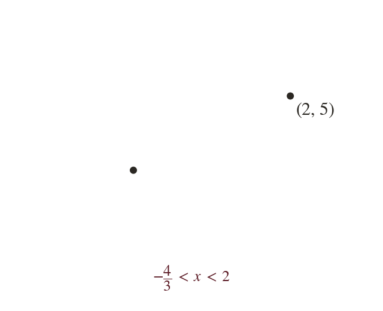
Pick an answer. If it's wrong, the feedback tells you which mistake it was.
Write the blanks in your book first, then tap each one to check.
Finished? Next lesson: P2-3.1 Arithmetic Sequences.
For each skill, tap the one that is true for you today. Your Revise pages start with anything you mark Not yet.
Your ratings are saved on this device only.
Log in, then search for a code to practise that skill.